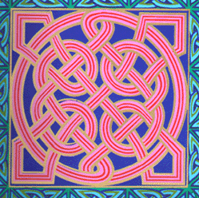

August 18th, 2004 (revised 11/17/2004)
Dear cherished circle of Friends,
On the morning of August 15th, mid-morning, on the fourth and last day of the Sacred Sundance in Arizona, our beloved brother, father (“papa” to many) and friend, Michael Murphy passed over to that "other side" he always spoke of so vividly. Michael left us the way he always was with us…serving others with his heart and mind on the love of God.
Many have come to know and love Michael from many different places. He was a resident of Harlem, NY and Huntington, West Virginia. He taught regularly on the streets of Union Square and Fulton Market. Mike’s life was a Sundance and we find it quite fitting that he literally passed in the shadow of the sacred arbor (the Tree of Life), at the Sundance Ceremony in Pinon, Arizona. It was the third year of the ceremony (of four)…and Michael has left us all to complete his Sundance (his work bearing the light of God in these darkest of times).
He was with approximately 30 friends and relatives – grandkids, daughters, and dear friends - that he led in a “journey to remember” across America in a ten-day caravan visiting the sacred sites of this country until reaching the Sundance ceremony, the four-day sacrificial dance to the Tree of Life, hosted by the Navajo (and Sioux) nation in northern Arizona. Mike collapsed of heart failure and passed over in the midst of the prayers of his family and those gathered - warriors, dancers, Chiefs, medicine and holy men and women and supporters - at the Sundance. His last words were “Nan, Nan”.... Nan, as many know, was Michael’s wife of 47 years who left this earth on September 11, 1990. Michael longed to be reunited with his eternal love and we are celebrating his liberation to new life and reunion with his Beloved. We are saddened and grievous by the loss of this giant among us... this light. Michael was a great teacher of love and committment. He shared that the depth of the Mystery of Christ was, in essence, the "being a living sacrifice". As the warriors were preparing to make the piercing on the fourth day of the Sundance (the piercing is a metaphoric display of the sacrifice we are making in order to bring about the new age of humanity)...Mike essentially made the living sacrifice. The following is a poem we found in his bag at the Sundance. By no means are we proposing that Mike consciously put himself at risk, we just see how fitting it all turned out to be. This was a poem we know he was wriring to Nan.
Another like it now is tied,around the sacred tree.
A marriage vow renewed and sealed between earth and me
and heaven thee.
This decent I'm sure is over now. The service was a quiet one .
I hope "I know" you saw me there. I've been there....
I hope "I know " you saw me there.
Tis , Gravity the force of love ...me below and you above .
The wedding was a quiet one I hope "I know" you saw me there.
The Sun Dance is not quite complete. The decent however (my work), I'm sure
it is .
There's still the piercing round (the living sacrifice). The ladder is found.
“Greater love hath no soul than this, that one lay down their life for their friends...”(John 15:13)
Michael chose to teach and be with people on the streets. Often people would ask where they could come to study, or what church they could attend. Michael always said the street was the classroom and our very hearts were the church. You could often find him at Union Square during the months of March to November, especially during the High Holy Days in September.
Mike’s message was simple…"Come out of her my people and be not partakers of her sins". He cried in the wilderness for Americans (and people everywhere) to awaken to the work that God is working in our day. He came to teach that there is a light being born in the midst of the darkness of this age. He cried for peace, he taught peace, he lived peace. He never laid any of his burdens on others but always kept them quietly to himself. He listened to all peoples, learned from all faiths, loved all races and brought forth an understanding of all the world’s sacred traditions as interconnected. Thus, all of humanity shares in the family of being human.
For those of you who have been studying with Michael over the years, his work will be continuing within the growing circle of close friends and family who are called to bring the Spirit of the Remnant into the world.
Please stay in contact with us. You can reach Michael Duff at (917)538-6586 or mduffny@gmail.com
or contact Timothy Murphy at tim.murphy@icloud.com.
A poem from a friend
Click here for a link to some video and audio of Mike.
“Blessed are the poor in spirit; for theirs is the kingdom of heaven.
Blessed are they that mourn, for they shall be comforted.
Blessed are the meek, for they shall inherit the earth.
Blessed are they which hunger and thirst after righteousness for they shall
be filled.
Blessed are the merciful, for they shall obtain mercy.
Blessed are the pure in heart, for they shall see God.
Blessed are the peacemakers, for they shall be called the children of God.
Blessed are those who are persecuted for righteousness sake,
for theirs is the kingdom of heaven.
Blessed are ye, when men shall revile you, and say all manner of evil against
you falsely, for my sake.
Rejoice and be exceedingly glad, for great is your reward in heaven,
for so persecuted they the prophets which were before you.” –Mathew
5: 2-12
Thank you all for your love and prayers.
With love,
The Murphy’s, Baker’s, Triska’s, Lucero’s and all Mike’s
friends and family.
An History and
A Commentary
on the
Tree of Life
Click below to go straight to the
An History and a Commentary on the Tree of Life has been--perhaps "creating itself" is a fitting way to describe it--since 1975, in the aftermath of the American Civil Rights and Anti-War movements, and when James Earl Carter appeared as a candidate for the office of the Presidency of the United States. Actually the foundation of this work was set years before, after reading an article in one of Jacksonville, Florida's Sunday papers about an old gentleman named Elvy E. Callaway from Bristol, Florida, who wrote a book entitled In the Beginning. In it he advanced the idea that that region in southwest Georgia (from where "Jimmy" Carter comes), was the original site of the lower garden of Eden described in the 2nd chapter of Genesis. (Please see chapter 2 and the subchapter in the Addendum entitled The Lower Garden, as well as Ezekiel 20:45-49). In the emerging interest of trying to fit such an idea with the events of our times, and in the subsequent discovery of the doctrines and precepts of that discipline of study known as Kabbalah, there seemed to be a Great Circle of some sorts connecting itself, one that did indeed begin in Genesis (2:8-17), and which does indeed complete itself here in our time in the words that say: And those who overcome will I give to eat of the Tree of Life, which is in the midst of the Paradise of God. (Revelation 2:7). The whole of these ideas could also be understood in the words: Know ye not...that it is He who sits upon the Circle of the Earth. (Isaiah 40:21-24, KJV).
This work at times will wax tedious, with commentary and with reference after reference to historical and biblical texts. Such labor, however (the intentional concentration required to remain on the subject), is a necessary exercize for the soul. It provides for the reader the same measure of focused contemplation, detailed study, and concern for the things of God as was demanded by the work itself. (There are, however, shortcuts to the ideas that are expressed in the main chapters of this work in those subchapters and letters listed in the Table of Contents under the heading of Since September 11th).
It has also been our hope all of these years to speak to the political community, to the intellectuals, to the socialists and activists in the antiwar, antiglobalism and environmental movements, who have by and large grown weary and suspicious of religious ideas, and who have struck out on their own to change the world. There are things unfolding in the earth today--Divine Realities--that must be understood. History is coming to its conclusions. (We realize, of course, that religion, in its adverse and darkest aspects, is also the cause of all these disorders in the world, and deserves in some great measure to be mistrusted). On October 6th, in New York City, a demonstration was held in Central Park against the impending American war in the Middle East. A Pledge of Resistance was distributed to the thousands attending, which concluded with the words: "Another world is possible and we pledge to make it real." We join in the pledge, and have been laboring at it since this work began. The reality is, however, that it can not happen unless God is (really) allowed back into the equation. It is God, the Creators of Heaven and Earth Themselves, who are risen up everywhere around us, and in us, in the sum of every natural and human event, and who are bringing this age to its just (and may we add, terrible), conclusion. There is no other reality. It is God (Creation itself if you will), who has brought us to this great crisis in human history in order to bring the new world that we seek into existence. There are conditions though, that cannot be disregarded or forsaken, and that must ultimately be accepted. There is a structure to Creation, the plan has been unfolding since the beginning of recorded history, no, since the beginning of time itself--out of Darkness, Light; out of chaos, order; out of anarchy, true community and out of simple indifference, true love--and any attempt to supplant it, whether from the Right or the Left, will only result in increased frustration and disappointment, further division, more confusion and continued disorder. We must adopt a spiritual world view, one that is at last capable, in the midst of these unfolding social, political and economic crises, of uniting all of us heart and mind to one another. (But it is we who must conform to the Design, not the other way around). Those who are presently attempting to create the world in their own violent and oppressive image--the capitalists and militarists of the Western world, along with the religious institutions that support them--have stolen the plans (along with everything else). How is it written: If we had known what day the Thief would come. Those who seek true righteousness and true justice in the earth, and the possibility of another world, must have the plans back in their own hands. They contain the next set of instructions. This work is such an effort. (Please consider the words at 1 Thessalonians, chapter 5. KJV).
This is not pop-kabbalah. And although this work will express itself in terms of the Laurianic system of Kabbalah, it will not confine itself to the Judaic expression of this system alone. There are two sides to the Tree of Life, a Jewish side and a Christian side--Judah and Levi. (Of course the Tree has a Taoist dimension, a Vedic and Buddhist dimension, it encompasses Islam and gathers the whole of Africa in its branches, and carries all of us together to where the trunk of this Living Oracle is rooted deep in the soil of Indigenous American spiritual consciousness. It is a very ancient Tree). It will not, however, conform to the theological doctrines of the great world-church--the church of Caesar--which has beset the world with so much confusion and with so many evils since the time of Christ. And neither will it confirm any of the simplistic, or otherwise literal methods of scriptural exegesis in use by mainline Christian fundamentalists or American evangelicals (or any of the other practitioners of Ba'al in our time). This method of interpretation cannot be purchased in religious bookstores. It is not American fast food. And neither is it an attempt to prosyltize Jews. There is only one True Religion in the world, the one that God is creating. Everyone is approaching the Tree of Life from their own historic perspective. (Nevertheless, the two Anointed Ones in our time shall appear on the Jewish [not-Zionist] side of the Oracle at the place named Majesty, as it is written: The Lord appointed the Moon for seasons: the Sun knoweth his (own) going down...Psalm 104:19; Zechariah, chapter 4).
...This work will require, however, as it blends with this previously unimaginable means of communication (the Internet...while we still have access to it), the same spiritual discipline and methods as were employed by those Essenes and Buddhists, Gnostics and Kabbalists of old, male and female alike, who have passed on to us in our time, not only an historical tradition to emulate but vast volumes of sacred texts to interpret. And by approaching these texts with the same spiritual discipline as they were composed, we may extract from them the same meanings as were put into them, and in the very same Light: The secret things belong unto the Lord our God: but those things which are revealed belong unto us and to our children forever, that we may do all the words of the law. (Deuteronomy 29:29). Perhaps the title of this work should have been: Remember Ye the Law of Moses. (Malachi 4:4).
Our methods of Scriptural interpretation are based upon the following spiritual as well as literary concepts, expressed ever so aptly in the conversation between Gautama and his disciple:
LordBuddha said, I have tried this way and that way to untie the knots. How would you loose them Ananda? My lord, Ananda replied, I would first study the knot and find out how it was tied, then it could be easily untied. The lord Buddha said, Right you are Ananda. If you wish to untie a knot you must first know how it was tied.

According to all of the dimensions of The Tree Of Life (the Oracles of Nature), alive and growing in every spiritual and natural way. Thus in accordance with the extraordinary and ongoing discoveries of modern science, and all of the still-unfolding realizations of 20th century Relativity and Quantum physics. (Compare Romans 1:20)
...Not, however, according to the (common) wisdom of men. (Deuteronomy 32:29; Isaiah 29:10-14; 1 Corinthians, chapters 1,2, and 3), (KJV)
...But definitely according to the unfolding and epic nature of reality, which is further revealed in the meaning of the Festivals of the Lord (Leviticus 23), and in the broad scope of the words: This Day, or To Day. (Hebrews 3:12-15; Luke 23:43)
...Thus in epic types and historic images. Open the Book of Joshua twice, once in the time of Moses and the written Law, and then again in the time of the rise of Christianity when all of the hidden precepts of the written Law began to be fulfilled.
...And therefore in the realization of the Heavenly Solar/Lunar Chariot, and of the Countenance of the Lord enthroned upon it--the Lord of Creation who is revealed to the mind in the sum and substance of every natural and human event. (Ezekiel, chapter 1)
...Thus in The Effect of Every Vision. (Ezekiel 12:22-28; 2 Esdras 9:1-6, KJV, Acts 2:1)
....And in their Double Effects. (Job 11:6; 33:14; Psalm 62:11; Isaiah 40:2; Matthew 13:51,52; Exodus 16:4-7)
....And according to the Law of Correspondances, Reflections, and Similitudes: "As this, so that," "As above, so below," "As in the East, so in the West." (Job 37:18; Colossians 3:1; Hosea 12:10; Acts 17:6; Antiquities X.VIII.3)
....According to the Tenor of things. (Genesis 43:7; Exodus 34:27)
....And the Shadow of things. (Colossians 2:16,17)
....And the use of Metaphors and Allegories: The kingdom of heaven is like... (Matthew 13; Galatians 4:24-26)
....And the use of Words whose meanings were concealed, (Acts 18:15)
...And in the discovery of the Spirit's use of every other literary device, including satire and parody, for the whole world is indeed a stage, and the curtain is being drawn for the final act.
So they read in the book of the Law distinctly, and gave the sense, and caused them to understand the reading...(Nehemiah 8:8).
Our prayer, then, is that if your mind is not focused in Netsah, (at the Foot of the Mystery, at the place numbered Seven, and named Endurance, or Victory, on the Tree of Life), that it will be established in Hod (the number Eight). In both cases the knot of spiritual awakening will open in Tiferet, and finally in Kether.